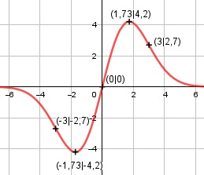

Aufgabe 145 f(x) = 4 * x * e-(x2/6) Produktregel erste Ableitung: u = 4x, u' = 4 v = e-(x2/6) Kettenregel: v' = (-2/6)x * e-(x2/6) = -x/3 * e-(x2/6) f'(x) = 4 * e-(x2/6) + (-x/3) * e-(x2/6) * 4x = e-(x2/6) * (4 - 4x2/3) Produktregel zweite Ableitung: u = e-(x2/6) Kettenregel: u' = (-2/6)x * e-(x2/6) = -x/3 * e-(x2/6) v = 4 - 4x2/3, v' = - 8x/3 f''(x) = -x/3 * e-(x2/6) * (4 - 4x2/3) + + (-8x/3) * e-(x2/6) f''(x) = e-(x2/6) * (- 4x/3 + 4x3/9 - 8x/3) f''(x) = e-(x2/6) * (- 12x/3 + 4x3/9) 4x3/9 - 4x f''(x) = -------------- ex2/6 Zur Beurteilung, ob f'''(x) ≠ 0: (Begründung siehe Aufgabe 105) u = 4x3/9 - 4x, u' = 4x2/3 - 4 u' 4x2/3 - 4 f'''(x) = --- = ----------- ≠ 0 für alle x ± ⱱ3 v ex2/6 weil 4x2/3 – 4 = 0 |+4 4x2/3 = 4 |*3 4x2 = 12 |:4 x2 = 3 |√ x1,2 = ± ⱱ3 Definitionsbereich: -∞ < x < ∞ Waagerechte Asymptote: 4x f(x) = 4x * e-(x2/6) = ------- ex2/6 geht gegen 0 für x --> ± ∞ Wertebereich: f(x) wird dann am größten, wenn x = 1,73 (Extrempunkt) f(1,73) = 4,2, und am kleinsten, wenn x = -1,73, f(-1,73) = -4,2 --> -4,2 ≤ f(x) ≤ 4,2 Symmetrie zur y-Achse bzw. zum Punkt (0|0): f(-x) = 4 * (-x) * e-(-x)2/6 f(-x) = -4x * e-(x2/6) ≠ f(x) --> keine Achsensymmetrie -f(-x) = -(-4x * e-(-x)2/6) -f(-x) = 4x * e-(x2/6) = f(x) --> Punktsymmetrie Nullstellen: f(x) = 0 4x * e-(x2/6) = 0 |:e-(x2/6) 4x = 0 |:4 x = 0 N(0|0) Schnittpunkt mit der y-Achse: x = 0 f(0) = 4 * 0 * e-02/6 = 0 Sy(0|0) Extrempunkte: f'(x) = 0 e-(x2/6) * (4 - 4x2/3) = 0 |:e-(x2/6) 4 - 4x2/3 = 0 |+4x2/3 4x2/3 = 4 | *3 4x2 = 12 | :4 x2 = 3 |ⱱ x1,2 = ± 1,73 x1 = 1,73 f(1,73) = 4 * 1,73 * e(-1,732/6)-(1,732/6) = 4,2 Wegen Punktsymmetrie f(-1,73) = -4,2 f''(1,73) = e-02/6 * (4 * 1,733/9 - 4 * 1,73) < 0 --> Hochpunkt (1,73|4,2) Wegen Punktsymmetrie --> Tiefpunkt (-1,73|-4,2) Wendepunkte: f''(0) = 0 e-(x2/6) * (4x3 - 4x) = 0 |:e-(x2/6) 4x3/9 - 4x = 0 4x * (x2/9 - 1) = 0 4x = 0 | : x1 = 0, f(0) = 0, WP1(0|0) x2/9 - 1 = 0 |+1 x2/9 = 1 |*9 x2 = 9 |ⱱ x2,3 = ± 3 , f(3) = 4 * 3 * e-32/6 = 2,7 --> WP2(3|2,7) Wegen Punktsymmetrie --> WP3(-3|-2,7) Graph:
